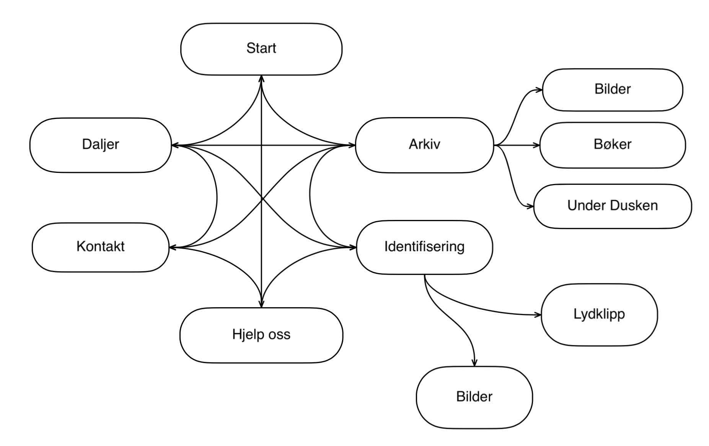

Adrian, Anders, Kia, Mange, Oda
The website's purpose is to make the archive more accessible and help strengthening their presence at Studentersamfundet. One specific goal is to create a platform where former and older members of Studentersamfundet can help identify old pictures and audio clips from old meetings etc. Another goal is to create a landing page for people who generally want to contribute to the preservation of the history of Studentersamfundet.
The websites main audience will be the current and former members of Studentersamfundet and anyone else that might be interested in its history. This audience includes people of all ages, from young adults to senior citizens. This can be challenging as young people and old people interact with webpages in different ways.
All the pages on this site will contain the navigation bar (menu).
A short description of who they are and what they do. If possible a little “news” box should be added, where they can put recent happenings that they can easily update themselves.
Arkivet have old pictures and old recordings they need help to identify. At the time being they would like to have one gallery for pictures and one for audio, but this may change. It should be possible to have a description and title which is easy to update. There should also be a “button” of sorts that opens a new email with a pre-fixed subject that matches the ID/name of the picture so people can easily send an email to the right place if they know anything about it. (these functions should also be the same for the audio clips)
The general gallery is for showing off select highlight of fun things from the archive. The overviews are for people to see what issues of Under Dusken and which books they have since they get a lot of inquiries from people that are looking for info from these. It should also be easy to add more galleries and overviews so they can do it themselves later. There is also a need to inform about overviews that exist but can't/won't be put out on a public page. It should be informed that people need to send an email to get access to them.
Contact information including: email addresses, postal address and information about office hours. This page will contain a table/grid with the specified information.
Information about lost and found for medals and how to get a new one. There will be a need to put in some pictures in the text to “show” and not tell some key info.
This section will contain information about things the archive really want, what they already have and how to donate items. The content of this page will be a header and a paragraph provided by the customer.
All the files for the web page will be gathered in a root folder web as this is the convention used where we host the site.